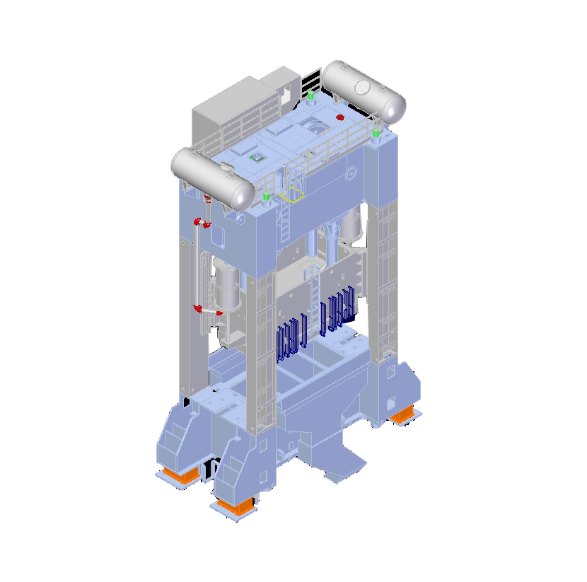
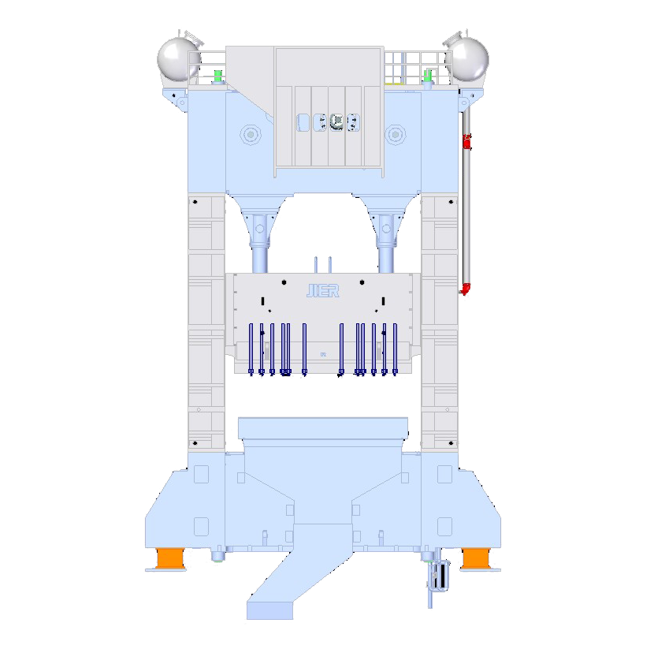
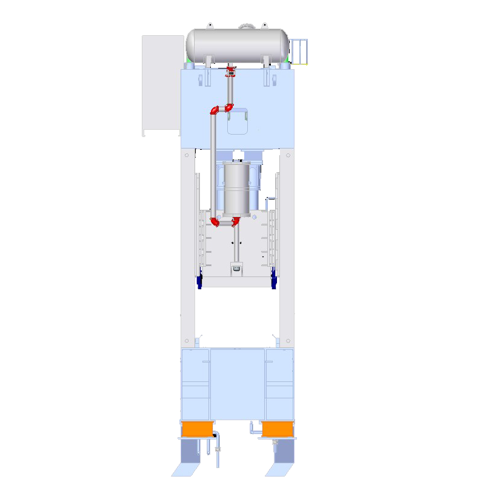
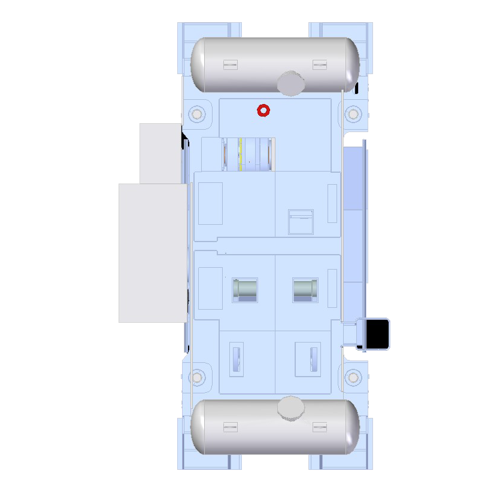

岗位职责管理系统， 致力于推动济南二机床岗位管理向数字化、智能化的方向发展。
了解更多




实时采集压力机以及自动化相关的传感器数据，所有的实时数据和历史数据都将以趋势曲线的形式进行显示，并推送冲压线相关的实时报警信息。
冲压线智能管理平台
根据丰厚的压力机经验，给每个监控点位设置合适的预警阈值，当数据超出阈值时推送预警。
返回上层
在历史数据的曲线中保存负样本曲线特征，在平台实时监控的过程中实时和负样本进行特征分析，相似度较高时推送预警。
利用数据模型，从大数据分析的角度预测数据走向，预测将来某段时间的数据集合，并结合阈值推送预警。